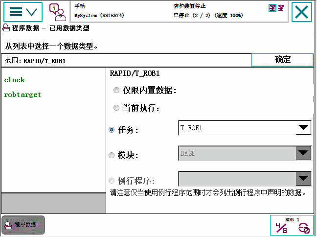

选择一个特定范围，查看数据类型的选项。
本节介绍如何查看特定模块或例行程序中的数据实例。
操作
1
在 ABB 菜单中，点击 Program Data（程序数据）。
2
点击 Change Scope（更改范围）。
以下窗口将显示：

3
选择需要的范围：
Built-In Data Only（仅限内置数据）：显示特定系统中使用的所有数据类型
Current execution（当前执行）：显示当前执行时所使用的所有数据类型
Task（任务）：显示特定任务所使用的所有数据类型
Module（模块）：显示特定模块使用的所有数据类型
Routine（例行程序）：显示特定例行程序使用的所有数据类型
4
点击 确定 ，确认您作出的选择。
5
双击选择数据类型查看其实例。